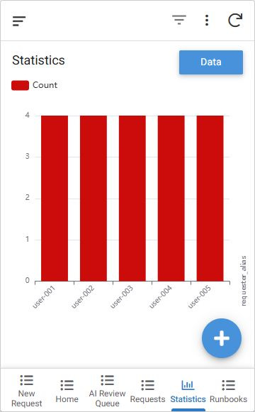

この事例で説明できること
- 業務フロー・6表・Ref・状態遷移の設計
- AppSheetの一覧・入力・レビューAction
- GASの入力検証・排他・二重適用防止
- 合成データ、テスト、運用・復旧文書
Portfolio case study · v0.1.0
問い合わせ受付、Runbook参照、AI下書き、人による承認・修正・却下、監査記録をつないだ小規模IT運用MVPです。
Verified evidence
以下は2026-08-18に合成データで確認した値です。実運用の削減率や有償導入実績を示すものではありません。
Workflow
App walkthrough
アカウント名、メールアドレス、編集URL、資産ID、ブラウザ上部は含めていません。画面内の依頼・担当者aliasはすべて合成値です。



Audit trail
承認・修正・却下をAI Draftから分離し、同じreviewを再実行してもイベントが増えないことを確認しています。


Scope and boundary